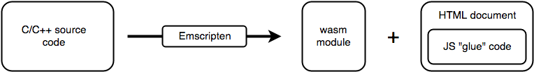

This article explains the concepts behind how WebAssembly works including its goals, the problems it solves, and how it runs inside the web browser's rendering engine.
WebAssembly is a new type of code that can be run in modern web browsers and provides new features and major gains in performance. It is not primarily intended to be written by hand, rather it is designed to be an effective compilation target for source languages like C, C++, Rust, etc.
This has huge implications for the web platform — it provides a way to run code written in multiple languages on the web at near-native speed, with client apps running on the web that previously couldn’t have done so.
What’s more, you don’t even have to know how to create WebAssembly code to take advantage of it. WebAssembly modules can be imported into a web (or Node.js) app, exposing WebAssembly functions for use via JavaScript. JavaScript frameworks could make use of WebAssembly to confer massive performance advantages and new features while still making functionality easily available to web developers.
WebAssembly is being created as an open standard inside the W3C WebAssembly Community Group with the following goals:
Note: WebAssembly will also have uses outside web and JavaScript environments (see Non-web embeddings).
The web platform can be thought of as having two parts:
Historically, the VM has been able to load only JavaScript. This has worked well for us as JavaScript is powerful enough to solve most problems people have on the Web today. We have run into performance problems, however, when trying to use JavaScript for more intensive use cases like 3D games, Virtual and Augmented Reality, computer vision, image/video editing, and a number of other domains that demand native performance (see WebAssembly use cases for more ideas).
Additionally, the cost of downloading, parsing, and compiling very large JavaScript applications can be prohibitive. Mobile and other resource-constrained platforms can further amplify these performance bottlenecks.
WebAssembly is a different language from JavaScript, but it is not intended as a replacement. Instead, it is designed to complement and work alongside JavaScript, allowing web developers to take advantage of both languages' strong points:
With the advent of WebAssembly appearing in browsers, the virtual machine that we talked about earlier will now load and run two types of code — JavaScript AND WebAssembly.
The different code types can call each other as required — the WebAssembly JavaScript API wraps exported WebAssembly code with JavaScript functions that can be called normally, and WebAssembly code can import and synchronously call normal JavaScript functions. In fact, the basic unit of WebAssembly code is called a module and WebAssembly modules are symmetric in many ways to ES2015 modules.
There are several key concepts needed to understand how WebAssembly runs in the browser. All of these concepts are reflected 1:1 in the WebAssembly JavaScript API.
postMessage()). A Module declares imports and exports just like an ES2015module.The JavaScript API provides developers with the ability to create modules, memories, tables, and instances. Given a WebAssembly instance, JavaScript code can synchronously call its exports, which are exposed as normal JavaScript functions. Arbitrary JavaScript functions can also be synchronously called by WebAssembly code by passing in those JavaScript functions as the imports to a WebAssembly instance.
Since JavaScript has complete control over how WebAssembly code is downloaded, compiled and run, JavaScript developers could even think of WebAssembly as just a JavaScript feature for efficiently generating high-performance functions.
In the future, WebAssembly modules will be loadable just like ES2015 modules (using <script type='module'>), meaning that JavaScript will be able to fetch, compile, and import a WebAssembly module as easily as an ES2015 module.
Above we talked about the raw primitives that WebAssembly adds to the Web platform: a binary format for code and APIs for loading and running this binary code. Now let’s talk about how we can use these primitives in practice.
The WebAssembly ecosystem is at a nascent stage; more tools will undoubtedly emerge going forward. Right now, there are four main entry points:
Let’s talk about these options:
Two of the many options for creating WASM code are an online wasm assembler or Emscripten. There are a number of online WASM assembler choices, such as:
These are great resources for people who are trying to figure out where to start, but they lack some of the tooling and optimizations of Emscripten.
The Emscripten tool is able to take just about any C/C++ source code and compile it into a .wasm module, plus the necessary JavaScript "glue" code for loading and running the module, and an HTML document to display the results of the code.

In a nutshell, the process works as follows:
Note: There are future plans to allow WebAssembly to call Web APIs directly.
The JavaScript glue code is not as simple as you might imagine. For a start, Emscripten implements popular C/C++ libraries like SDL, OpenGL, OpenAL, and parts of POSIX. These libraries are implemented in terms of Web APIs and thus each one requires some JavaScript glue code to connect WebAssembly to the underlying Web API.
So part of the glue code is implementing the functionality of each respective library used by the C/C++ code. The glue code also contains the logic for calling the above-mentioned WebAssembly JavaScript APIs to fetch, load and run the .wasm file.
The generated HTML document loads the JavaScript glue file and writes stdout to a {{htmlelement("textarea")}}. If the application uses OpenGL, the HTML also contains a {{htmlelement("canvas")}} element that is used as the rendering target. It’s very easy to modify the Emscripten output and turn it into whatever web app you require.
You can find full documentation on Emscripten at emscripten.org, and a guide to implementing the toolchain and compiling your own C/C++ app across to wasm at Compiling from C/C++ to WebAssembly.
Do you want to build your own compiler, or your own tools, or make a JavaScript library that generates WebAssembly at runtime?
In the same fashion as physical assembly languages, the WebAssembly binary format has a text representation — the two have a 1:1 correspondence. You can write or generate this format by hand and then convert it into the binary format with any of several WebAssemby text-to-binary tools.
For a simple guide on how to do this, see our Converting WebAssembly text format to wasm article.
It is also possible to write Rust code and compile over to WebAssembly, thanks to the tireless work of the Rust WebAssembly Working Group. You can get started with installing the necessary toolchain, compiling a sample Rust program to a WebAssembly npm package, and using that in a sample web app, over at our Compiling from Rust to WebAssembly article.
For web developers who want to try WebAssembly without needing to learn the details of C or Rust, AssemblyScript will be the best option. It generates a small bundle and its performance is slightly slower compared to C or Rust. You can check its documentation on https://assemblyscript.org/.
This article has given you an explanation of what WebAssembly is, why it is so useful, how it fits into the web, and how you can make use of it.